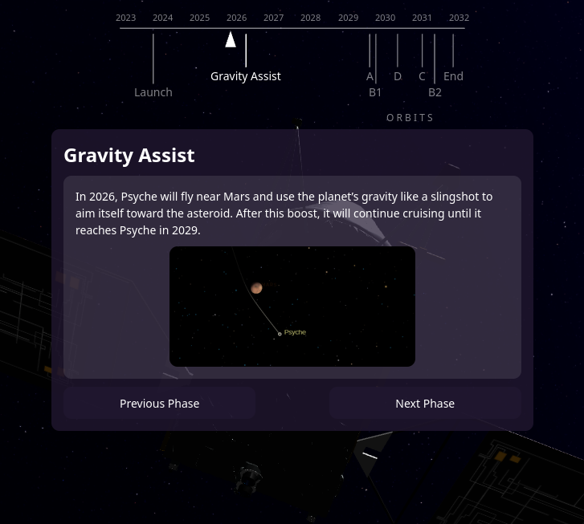
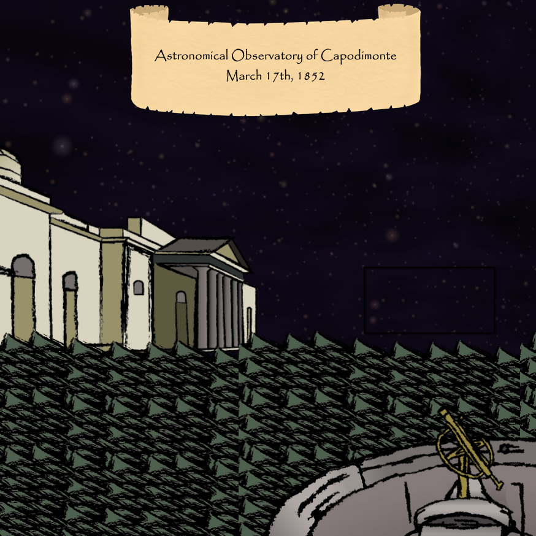

NASA Psyche Mission: AR/WebXR for Public Engagement—CERNN: Satellite Experience

This project envisions an interactive AR experience that allows users to explore the Psyche spacecraft and track the mission’s progress in real time. Through intuitive controls, users can see how long the satellite has been traveling, how far it has gone, and how much distance remains until arrival. The design emphasizes accessibility, ensuring audiences of all ages and abilities can engage with the mission through simple mobile gestures.
The experience is divided into two main flows: Explore the Spacecraft and Explore the Mission. Users can interact with a glowing 3D model of the spacecraft, clicking on instruments to learn how each supports Psyche’s scientific goals—such as determining whether Psyche is a planetary core or characterizing its surface topography. In parallel, a mission timeline highlights key milestones from launch to orbit, with countdowns and scrubbable progress markers that build anticipation and emotional connection.
By combining scientific detail with immersive storytelling, the design fosters curiosity and excitement about NASA’s Psyche Mission. It transforms complex data into an engaging narrative, helping audiences understand both the spacecraft’s technology and the broader scientific quest to uncover the mysteries of Psyche 16.
Tags:
NASA Psyche Mission: AR/WebXR for Public Engagement—CERNN: Lore & Mythology

In collaboration with NASA and Arizona State University, this project reimagines how audiences experience space exploration. Visitors interact with a 3D model of the Psyche asteroid, scan QR codes for interactive content, and step into the role of Annibale de Gasparis to rediscover Psyche using a period-accurate telescope. Mythological storytelling enriches the experience, drawing parallels between Psyche’s origins and symbolic imagery of transformation and the soul.
The journey transitions from the 19th-century discovery to NASA’s modern spacecraft mission, blending scientific exploration with mythological analogies. Users witness the spacecraft’s launch, orbital countdowns, and symbolic overlays that connect the mission to the “Breath of Life.” By merging history, mythology, and cutting-edge technology, the project engages audiences emotionally and intellectually, fostering curiosity and deeper connection to the Psyche Mission.
Tags:
NASA Psyche Mission: AR/WebXR for Public Engagement—CERNN: Satellite Experience
NASA Psyche Mission: Lore & Mythology Experience
My name is Emily Dinaro,
and I am a Software Engineering major with a minor in Sustainability at
Arizona State University’s Ira A. Fulton Schools of Engineering.
I live in Denver, CO, and enjoy photography, systems design, reading, and hiking.
I am currently employed at Echostar as a top-level in-home service technician.
My work includes security system installation and troubleshooting,
networking and diagnostics for IoT smart devices, satellite and MoCA
system installation and repair, and customer support.
I have been studying Computer Science and Systems Engineering since 2012.
My past work includes an independent study in multithreaded programming at
Creighton University and a Senior Capstone Project completed in collaboration
with NASA’s Jet Propulsion Laboratory for the Psyche mission.